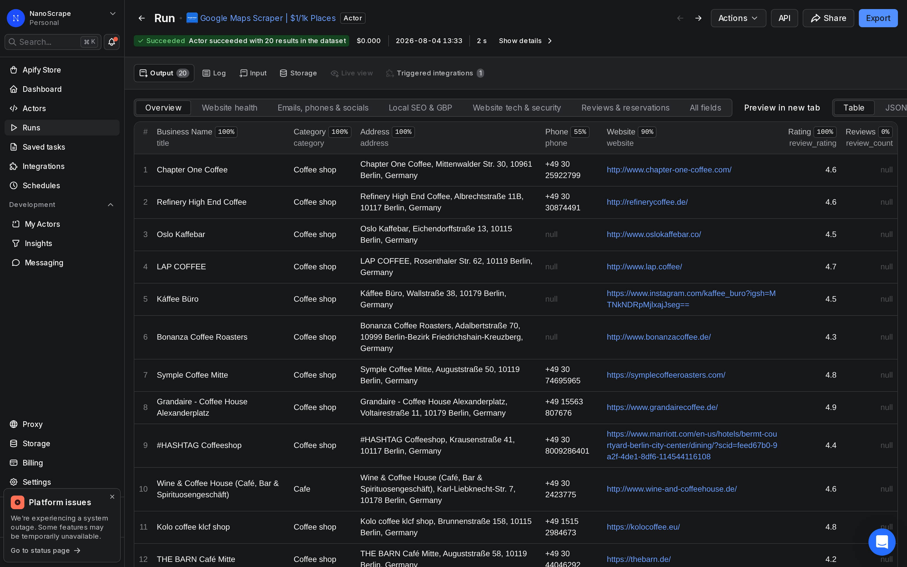
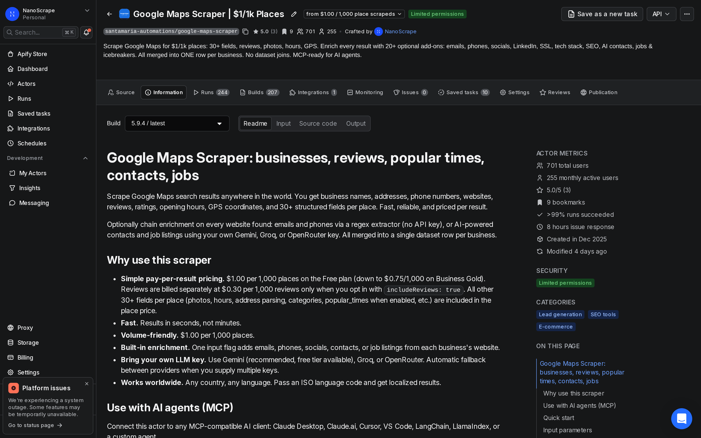
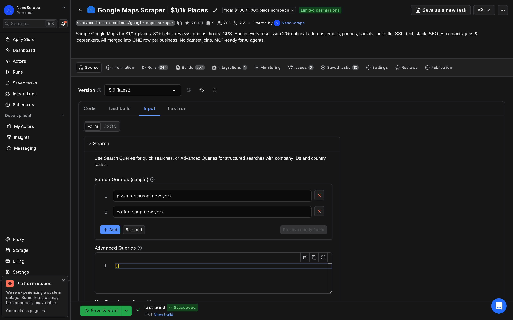
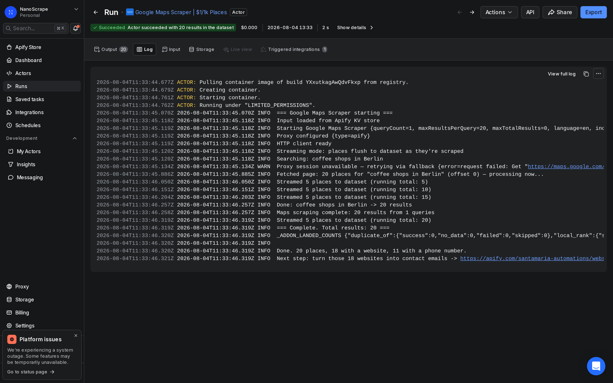

How to Get Google Maps Data Without the Places API
The Google Maps Places API charges $17 per 1,000 results for the basic details tier, requires a Google Cloud billing account, and bills by the request with no free threshold beyond the initial credit. The NanoScrape Google Maps Scraper on Apify costs $1 per 1,000 places, needs no API key or Google account, and returns 30+ structured fields per place including phone, website, rating, opening hours, and GPS coordinates. You call it via a simple REST endpoint or from Python in a few lines. This guide walks through the cost difference, how to run your first search, and how to call it programmatically as a drop-in replacement.

In this tutorial
Google Maps API vs the NanoScrape scraper
The Google Maps Places API gives you programmatic access to place data, but the pricing adds up fast. The Text Search endpoint costs $17 per 1,000 requests for a basic set of fields, and the full Nearby Search or Place Details endpoint runs $32 per 1,000. On top of that you need a Google Cloud project, a billing account, and an API key that you rotate and secure yourself.
The NanoScrape Google Maps Scraper scrapes the same public place data directly and returns it in a structured JSON dataset. No API key, no Google Cloud account, no per-field SKU pricing.
- Price per 1,000 places: Google Places API $17-32 vs NanoScrape $1.00 (down to $0.75 on higher plans).
- API key required: Google yes (Cloud billing account needed) vs NanoScrape no (Apify account only).
- Fields included at base price: Google charges extra for each additional field set vs NanoScrape includes all 30+ fields in the per-place price.
- Bulk extraction: Google API is designed for single-place lookups vs NanoScrape handles batch searches of any size in one run.
- Free tier: Google gives $200/month credit vs Apify gives $5/month credit (5,000 places).
What you get per place
Every place in the dataset includes the following fields at the base price of $1 per 1,000:
title: business name as shown on Google Maps.category/categories: primary type and all associated categories.address: formatted address string.complete_address: parsed object withstreet,city,postal_code,state,country.phone: primary phone number from Google Maps.website: business website URL.ratingandreview_count: star rating and total review count.latitude/longitude: GPS coordinates.open_hours: structured weekly schedule.status: OPERATIONAL, CLOSED_TEMPORARILY, or CLOSED_PERMANENTLY.place_id: Google's permanent unique identifier for the place.link: direct Google Maps URL.
Optional add-ons (billed separately or via your own LLM key): email extraction from the business website, AI-powered named contacts, open job listings, popular times histogram, and cold-outreach icebreakers.
Prerequisites
- A free Apify account. Sign up at apify.com. The free tier includes $5/month of credit.
- One or more search queries. Each query should include the business type and location, for example
dentists in Chicagoorcoffee shops in Tokyo. - For programmatic access (step 6): your Apify API token from Console › Settings › Integrations.
Get a free Apify account
- Open the actor page and click Try for free.
- Sign up with Google or email. Takes under a minute.
- You land on the actor input form inside Apify Console. The $5 monthly credit is added automatically.
Open the scraper actor
After signing in, you see the actor page. The Information tab shows pricing, all supported input fields, and example inputs. The Input tab is where you run your first search.

Set your search input
Click Input in the left sidebar. The most common setup is a list of search strings. Put the business type and location inside the same string:
{
"searchStrings": [
"plumbers in Chicago",
"accountants in London",
"yoga studios in Sydney"
],
"maxResultsPerQuery": 20
}To match what the Google Maps Places API returns for a specific location, use the queries field with explicit location and country:
{
"queries": [
{
"query": "dentists",
"location": "Berlin",
"country": "DE",
"company_id": "my-campaign-berlin"
}
],
"maxResultsPerQuery": 100
}
Run and review the results
- Click Start at the bottom of the Input tab.
- The run opens and shows the Log tab. Watch each batch arrive in real time.
- When the run shows Status: SUCCEEDED, click Dataset in the left sidebar.
- Use the Export button to download as JSON, CSV, or Excel.

Call it via the Apify REST API
The scraper exposes a synchronous REST endpoint that works like any other data API: POST your query, get back a JSON array of places. This is the simplest way to use it as a direct replacement for the Google Maps Places API inside your own code or pipeline.
curl -s -X POST \
"https://api.apify.com/v2/acts/santamaria-automations~google-maps-scraper/run-sync-get-dataset-items?token=YOUR_APIFY_TOKEN" \
-H "Content-Type: application/json" \
-d '{
"searchStrings": ["dentists in Chicago"],
"maxResultsPerQuery": 50
}'The endpoint blocks until the run completes and returns the dataset as a JSON array. Swap YOUR_APIFY_TOKEN with your token from Console › Settings › Integrations.
For long batches (thousands of places), use the async pattern instead: start the run and poll for completion.
# 1. Start the run
RUN_ID=$(curl -s -X POST \
"https://api.apify.com/v2/acts/santamaria-automations~google-maps-scraper/runs?token=YOUR_APIFY_TOKEN" \
-H "Content-Type: application/json" \
-d '{"searchStrings":["hotels in Paris"],"maxResultsPerQuery":500}' \
| python3 -c "import json,sys; print(json.load(sys.stdin)['data']['id'])")
# 2. Poll until finished
until [ "$(curl -s \"https://api.apify.com/v2/actor-runs/$RUN_ID?token=YOUR_APIFY_TOKEN\" | python3 -c \"import json,sys; print(json.load(sys.stdin)['data']['status'])\")" = "SUCCEEDED" ]; do sleep 10; done
# 3. Fetch results
curl -s "https://api.apify.com/v2/actor-runs/$RUN_ID/dataset/items?token=YOUR_APIFY_TOKEN"Python: fetch place data in 10 lines
Install the Apify client and run a search from Python. The call() method starts the run and blocks until it finishes:
pip install apify-client
from apify_client import ApifyClient
client = ApifyClient("YOUR_APIFY_TOKEN")
run = client.actor("santamaria-automations/google-maps-scraper").call(
run_input={
"searchStrings": ["coffee shops in Berlin"],
"maxResultsPerQuery": 20,
}
)
for item in client.dataset(run["defaultDatasetId"]).iterate_items():
print(item["title"], item.get("phone"), item.get("rating"))Each item is a dictionary with all 30+ place fields. Pipe it into a database, a pandas DataFrame, or your own downstream service.
asyncio with the async client (apify-client[async]) to fire multiple searches in parallel.Output fields reference
All fields below are included in every place row at the base price of $1 per 1,000 places:
title: business name.category/categories: type and all associated categories.address: full formatted address string.complete_address: parsed object (street,city,postal_code,state,country).phone: primary phone number.website: business website URL.rating: star rating (1.0 to 5.0).review_count: total Google reviews.latitude/longitude: GPS coordinates.timezone: IANA timezone identifier.status: OPERATIONAL, CLOSED_TEMPORARILY, or CLOSED_PERMANENTLY.open_hours: structured weekly schedule.price_range: price level indicator from Google.place_id: Google's permanent unique ID for the place.cid: Google Maps Customer ID (stable cross-session identifier).link: direct Google Maps URL.company_id: passes through the value you set in your query object.
What it costs
Billing is per place extracted, not per run.
- Places: $0.001 per place on the Free plan ($1.00 per 1,000). Drops to $0.00097 on Bronze, $0.00089 on Silver, and $0.00075 on Gold, Platinum, and Diamond.
- Reviews: $0.0003 per review ($0.30 per 1,000), billed only when you set
includeReviews: true. Off by default. - Actor start: a small container fee per run (under $0.001 for default memory settings).
- Email and AI enrichment: billed by your own LLM provider when you supply a Gemini, Groq, or OpenRouter key. The actor itself does not charge extra for these add-ons beyond the per-place rate.
The Apify free tier gives $5 of credit every month. At $1.00 per 1,000 places that covers 5,000 places per month at no cost. No subscription or credit card required to start.
FAQ
Is this a true replacement for the Google Maps API?
For batch data collection, yes. The scraper returns the same public place data (name, address, phone, website, rating, hours, GPS) at a fraction of the cost. It is not suitable for real-time in-app lookups that require sub-100ms latency, routing calculations, or map tile rendering. For those use cases the official Google Maps APIs are the correct tool.
Do I need a Google Cloud account or API key?
No. The scraper does not use the Google Maps API. It scrapes Google Maps directly. You only need an Apify account, which is free to create.
How many results can I get per search?
Google Maps shows up to 120 places per search query. Set maxResultsPerQuery to 120 to get the maximum per query. Run multiple queries with different search strings to collect larger datasets. There is no hard cap on total places per account.
Can I call it from my own backend like a REST API?
Yes. Use the synchronous endpoint POST /v2/acts/santamaria-automations~google-maps-scraper/run-sync-get-dataset-items. It blocks until the run finishes and returns the dataset as a JSON array. For large batches, start an async run and poll the status endpoint until it shows SUCCEEDED, then fetch the dataset.
Does it work in all countries and languages?
Yes. The scraper works anywhere Google Maps has data. Pass an ISO 639-1 language code in the language field (for example de, fr, ja, zh) to get localized business names and categories.
Can I run it on a recurring schedule?
Yes. In Apify Console, open the actor and click Schedules to set up a cron-based trigger. You can also call the start endpoint from your own scheduler (cron, GitHub Actions, Airflow, etc.) using the Apify API.
Related resources
- Google Maps Scraper actor page: Full specs, pricing tiers, and comparison with alternatives.
- How to Scrape Google Maps: Quick-start guide to get your first results in under 5 minutes, no code required.
- Extract Business Leads from Google Maps: Combine Google Maps place data with email extraction and AI contacts for outreach campaigns.
- Scrape Google Maps with n8n: Automate recurring Google Maps data collection into Google Sheets or a database using n8n.
- Google Maps Reviews Scraper: Collect individual customer reviews and ratings from Google Maps at scale.
- Google Maps Scraper on Apify: Full actor documentation, all input parameters, and the complete field reference.
- All NanoScrape tutorials: Step-by-step guides for scraping LinkedIn, Reddit, YouTube, TikTok, and more.